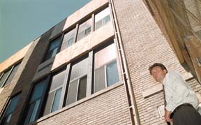

My second boy, Scott McQueen, is six. You can find more pictures of him here.
Dr. Scott McQueen is pastor at the
The Capstone Church in Tuscaloosa, Alabama.
He wrote a nice note when he changed URL's, and I put him in touch with my aunt, who's the expert on my family tree. Seems a Donald McQueen, her Grandfather, lived in the same house with Scott's greatgrandfather, Henry Clay McQueen. Found on 1860 census. My Aunt thinks Clay might have been a nephew to Donald's father. Who knows?

Scott McQueen is an architect in Minnesota. He's done some work in
Winona, Minn.
The Red Deer Rebels , a hockey team in Red Deer, Alberta, Canada, has TWO Scott McQueens; Scott C. is from Edmonton, Alberta, and Scott D. is from Saskatoon, Saskatchewan. The Rebels call the unrelated players Junior and Senior.
Scott McQueen runs Trapline Tours & Crafts in Yellowknife, Northwest Territories, Canada.
You can read his race results via the Yellowknife Dog Trotters Association here, and here.I received e-mail once from Scot McQueen, who was a chemistry student at Southern Oregon University.
Scott McQueen is a graduate student in chemistry at University of Nebraska.
There's a Scott McQueen who's a steam turbine Supervisor for Houston Light & Power.
There's also a Scott McQueen who races with the Lone Star Region Porsche Club of America. Are these two Scotts the same guy?
Scott McQueen is in the Chamber of Commerce and works for Northwestern Mutual Life in Fort Dodge, Iowa.
Scott McQueen is involved with the Men's Collegiate Club Volleyball program at Indiana University.
Scott McQueen played in an Illinois High School Assn. Chess tournement for West Chicago High School.
Scott McQueen is the contact for the Great Lakes Soft Water Co. in Stevens Point, Wisconson
Scott McQueen is Senior Customer Service Engineer for PSINet, Cambridge, United Kingdom. He's posted a sample of his sense of humor.
Scott McQueen is the contact for The Corby Windows Group in Corby, Northamptonshire, England.
Scott McQueen is a Service Advisor/Master Technician for Bruce Lynton BMW in Southport, Queensland, Australia.
Back to the McQueen Family Home Page.